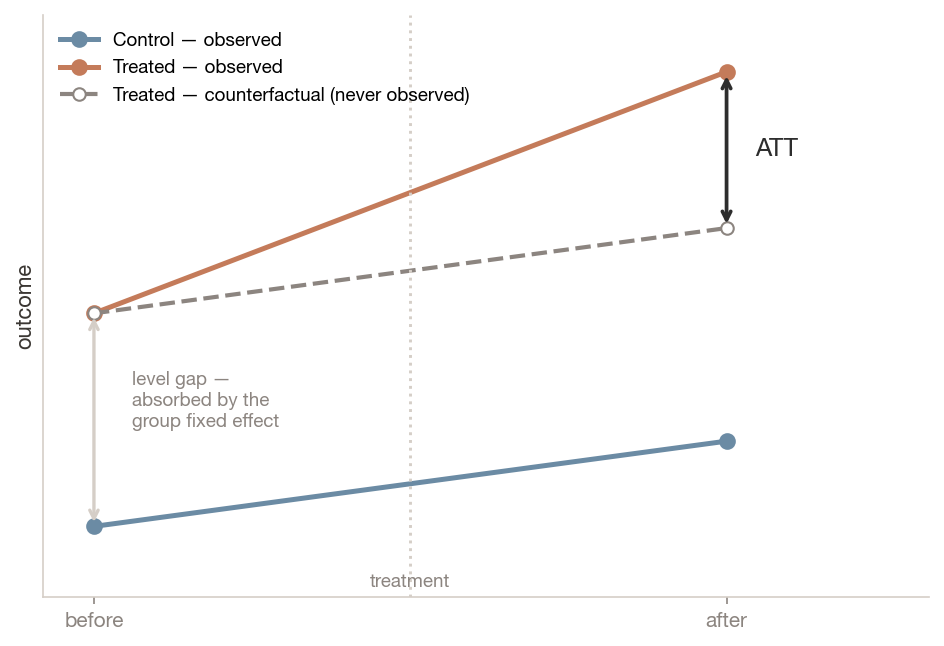
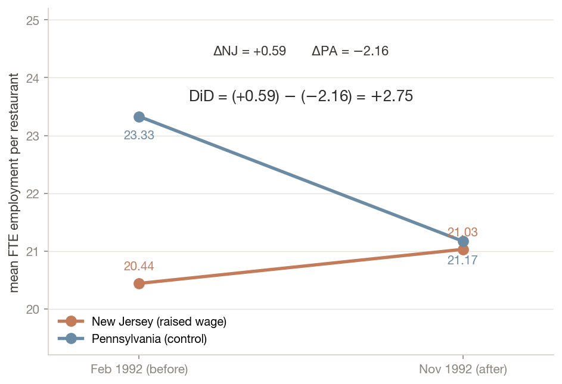
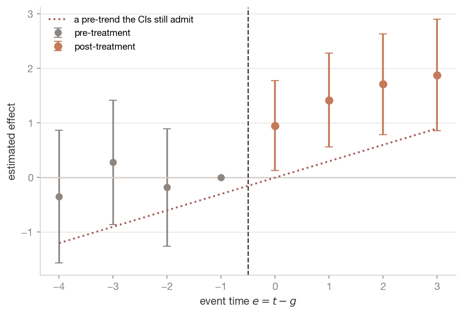
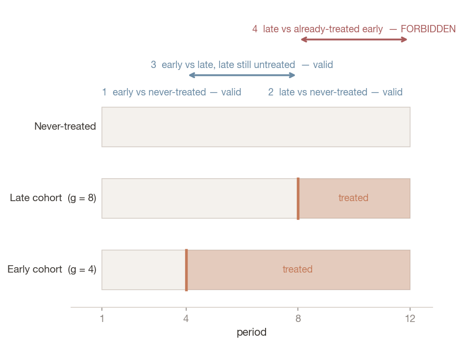
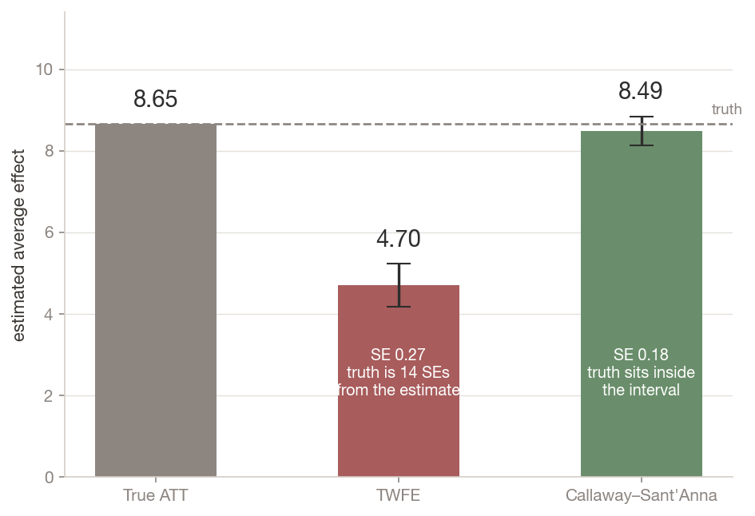
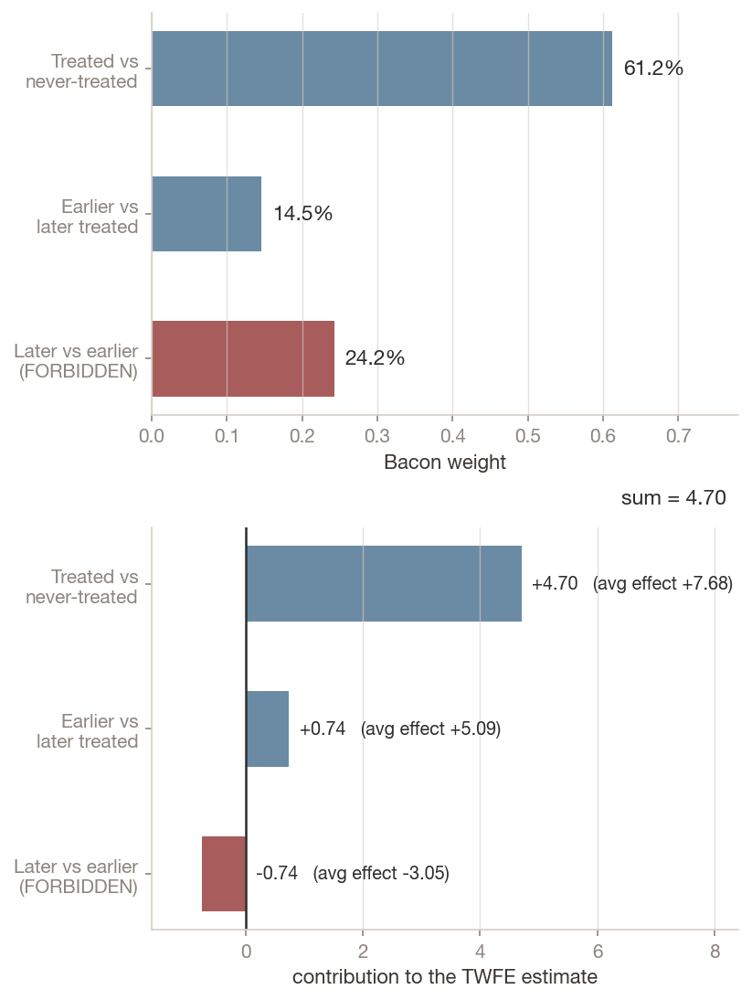
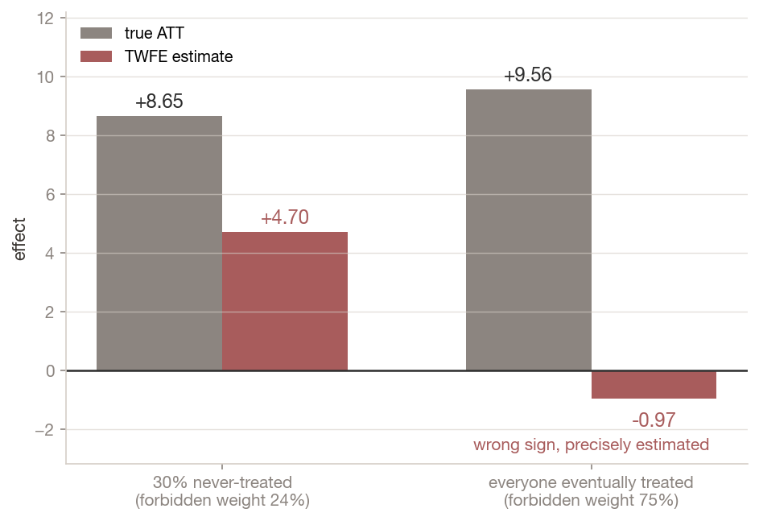
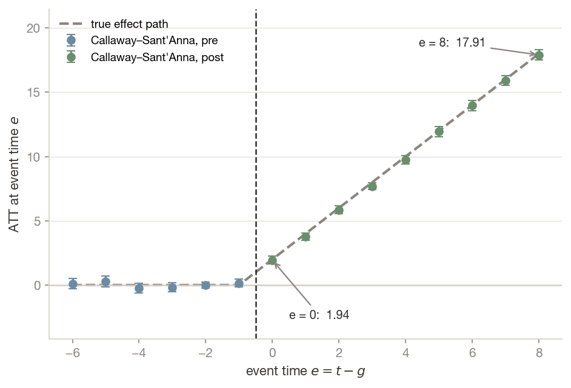
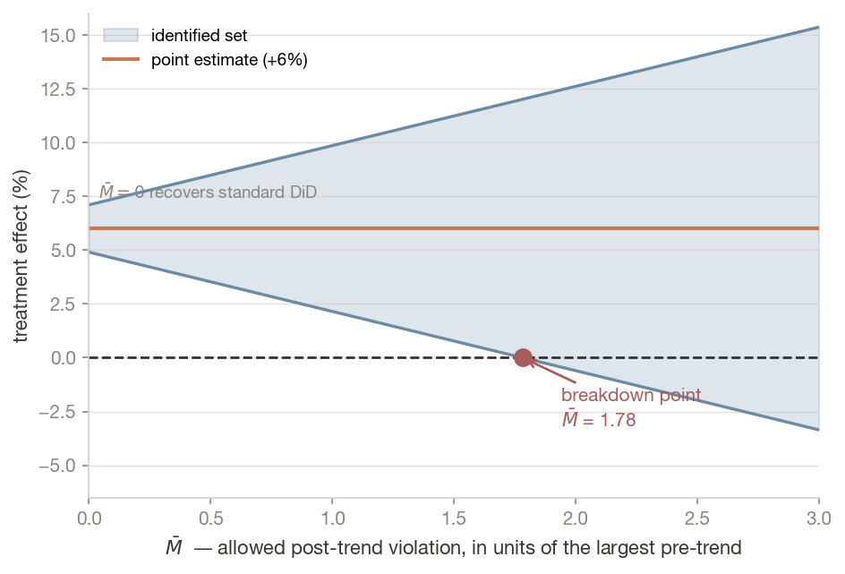

ECON 5200 • Causal ML & Applied Analytics • Chapter 11
Identification is an argument, not a function call.
Dr. Richeng Piao
Department of Economics
Northeastern University

LO1
Understand — state parallel trends formally, explain why it is fundamentally untestable, and say what a pre-trend test does and does not establish
LO2
Apply — estimate a canonical 2×2 by hand, by regression, and with cluster-robust inference; replicate Card & Krueger (1994)
LO3
Analyze — diagnose why two-way fixed effects fails under staggered adoption, using Goodman-Bacon to quantify the weight on forbidden comparisons
LO4
Evaluate — select and defend a heterogeneity-robust estimator, and report partial-identification bounds under formalised violations of parallel trends
Chapter 10. What does the backdoor criterion require of you before it will license a causal claim?
That you name and measure every confounder on a backdoor path. The heroic part is the measuring.
Chapter 9. What does randomisation buy that observational adjustment does not?
Balance on unobservables, not just on the covariates you happened to collect.
Chapter 8. At what level should standard errors be clustered?
At the level treatment is assigned — not the level at which data happens to be observed. Hold that one; it returns at minute 60.
You evaluate a policy that helped everyone it touched. Clean panel, staggered rollout across states, and the standard specification since the early 1990s: outcome on a treatment indicator with unit and time fixed effects.
The truth
+8.65
What the regression reports
+4.70 (SE 0.27)
Nothing is wrong with the data or the code. The truth is more than fourteen standard errors away. And when every unit is eventually treated — which describes a great many real rollouts — the same specification returns −0.97 for a policy whose true effect is +9.56.
Today's thesis: identification is an argument, not a function call.
Section 1
Two groups. Two periods. One assumption doing all the work.
Naive move 1 — before vs after
Look at the treated group before and after. Confounded by everything else that happened in the meantime: a recession, a seasonal cycle, a wage change next door.
Naive move 2 — treated vs control, after
Compare the two groups in the post period. Confounded by whatever made the groups different in the first place — the selection problem from Chapter 9.
Take both differences. The change in the treated group, minus the change in the control group. The first subtraction removes anything fixed about each group. The second removes anything common to both over time.
What survives is the treatment effect — if the only remaining difference between the groups' trajectories is the treatment.
The trade: Chapter 10 asked you to measure the confounders. DiD asks you to find a group that would have moved the same way without the treatment, and lets that group absorb everything you cannot see.
$$\delta = \big(E[Y_{i1} \mid G_i = 1] - E[Y_{i0} \mid G_i = 1]\big) - \big(E[Y_{i1} \mid G_i = 0] - E[Y_{i0} \mid G_i = 0]\big)$$
In words: the treated group's change, net of the control group's change over the same window. $G_i = 1$ marks the group that gets treated; $\delta$ is the difference-in-differences estimand.
$$\text{ATT} = E[Y_{i1}(1) - Y_{i1}(0) \mid G_i = 1]$$
In words: the average effect of treatment on the units that were actually treated, in the post period.
Not the ATE. This is not the $\tau$ from Chapter 9. DiD identifies the effect for the treated group, which may differ from the effect treatment would have had on the controls. When treatment is targeted — and policy treatment usually is — that distinction is substantive, not pedantic.
$$E[Y_{i1}(0) - Y_{i0}(0) \mid G_i {=} 1]$$ $$= E[Y_{i1}(0) - Y_{i0}(0) \mid G_i {=} 0]$$
In words: in the world where treatment never happened, both groups' average outcomes would have changed by the same amount.
Not been equal — changed equally. Levels may differ by any amount at all.
The dashed line is never observed. That is not a data limitation you can spend your way out of — it is the fundamental problem of causal inference, in a new place.
Result. Under parallel trends and no anticipation, $\delta = \text{ATT}$.
Add and subtract $E[Y_{i1}(0) \mid G_i = 1]$. The treated group is untreated at $t=0$, so $Y_{i0} = Y_{i0}(0)$; it is treated at $t=1$, so $Y_{i1} = Y_{i1}(1)$. Then:
$$\delta = \underbrace{E[Y_{i1}(1) - Y_{i1}(0) \mid G_i {=} 1]}_{\text{ATT}} + \underbrace{E[Y_{i1}(0) - Y_{i0}(0) \mid G_i {=} 1] - E[Y_{i1}(0) - Y_{i0}(0) \mid G_i {=} 0]}_{= \, 0 \text{ by parallel trends}}$$
Internalise the shape, not the algebra. The entire identifying content of difference-in-differences sits in that second bracket.
Everything else in this lecture — event studies, Goodman-Bacon, Callaway–Sant'Anna, Honest DiD — is an attempt to make that bracket credible, bound it, or estimate it under weaker conditions.
$$Y_{it} = \alpha + \beta G_i + \gamma\,\text{Post}_t + \delta\,(G_i \times \text{Post}_t) + \varepsilon_{it}$$
$\alpha$ — intercept: the control group in the pre period
$\gamma$ — the common time trend
$\beta$ — the fixed level difference between groups
$\delta$ — the DiD estimate, on the interaction
In words: $\delta$ is numerically identical to the four-means calculation. The regression is preferred because it gives you standard errors and takes covariates — not because it does anything different. (Watch the notation: $\alpha$ here is a regression intercept, not Chapter 8's significance level.)
Key concept — slopes, not levels
DiD does not require the groups to be similar. New Jersey and Pennsylvania restaurants differ in wages, rents and clientele, and it does not matter — any time-invariant difference is absorbed by $\beta$. What must hold is that the two groups' untreated trajectories would have moved in parallel.
This is why "the groups aren't comparable" is usually a misdirected criticism — and why "employment in your control state was already trending differently" is a devastating one.

1 April 1992. New Jersey raised its minimum wage from \$4.25 to \$5.05. Pennsylvania did not. 410 fast-food restaurants — Burger King, KFC, Wendy's, Roy Rogers — surveyed in February and November 1992.
Standard competitive theory makes a clean prediction: raise the price of labour above market clearing and employers buy less of it. Employment in NJ should fall relative to PA.
It did not. The result was contested for a decade, generated a large replication literature, and is part of the body of work for which Card shared the 2021 Nobel Prize.
What matters is the design. They did not measure and control for everything that differs between NJ and PA restaurants — an impossible task. They found a control group whose employment path plausibly tracked New Jersey's, and let it absorb the confounders wholesale.
Lab 11 parses this from the original archive — fixed-width public.dat plus codebook — and lands on +2.75 against the published +2.76.
A referee writes: "Pennsylvania restaurants employ 14% more staff than New Jersey restaurants on average, so they are not a valid control group."
What is the correct response?
Any time-invariant difference is differenced away by the group fixed effect. The devastating version of this criticism is about slopes: "PA employment was already trending differently." That one you must answer.
Why B and D are tempting: they import a matching intuition from selection-on-observables designs, where balance on levels really does matter. DiD buys identification differently. The balance requirement travels with the design you came from, not the one you are using.
Section 2
What a flat pre-trend does — and does not — establish.
The assumption is about a counterfactual — what the treated group's outcome would have done absent treatment. That path is unobserved by construction.
What researchers check instead is whether the groups moved in parallel before treatment. With several pre-periods, estimate a coefficient for each and see whether they are flat. This is the event study, and it is genuinely informative.
$$Y_{it} = \alpha_i + \gamma_t + \sum_{e \neq -1} \delta_e \cdot \mathbb{1}[t - g_i = e] + \varepsilon_{it}$$
$\alpha_i, \gamma_t$ — unit and time fixed effects
$e = t - g_i$ — event time
$g_i$ — the cohort: the period unit $i$ is first treated
$\delta_e$ — the effect at event time $e$
In words: each $\delta_e$ for $e < 0$ is a pre-trend coefficient and should sit near zero; each $\delta_e$ for $e \ge 0$ traces the dynamic path of the effect. We omit $e = -1$, normalising $\delta_{-1} = 0$.
Two cautions. The reference period is a normalisation, not a fact — every coefficient is measured relative to $e = -1$, and a different base period shifts the whole picture. And in staggered designs this specification is itself contaminated, for reasons that occupy the next two sections.

First pass
"Pre-trends are flat." Every pre-treatment coefficient is individually indistinguishable from zero. This is what gets reported.
Second pass
The intervals also admit the dotted line — a pre-trend large enough to generate the entire post-treatment effect.
The plot is consistent with both stories. Nothing in it distinguishes them.
1. Low power
Few periods, wide standard errors. Failing to reject a null of zero pre-trends is weak evidence when you had little chance of rejecting it. The honest diagnostic is not the $p$-value on the pre-trends but the power of that test against an economically meaningful violation.
2. Pre-test bias
Conditioning your analysis on having passed a pre-test changes the sampling distribution of the estimator you report, and conventional standard errors do not reflect that conditioning. Structurally this is Chapter 10's collider problem, with your own publication decision as the collider.
3. Flat pre-trends ≠ parallel counterfactual trends
The assumption concerns the post period. A policy adopted precisely because a shock was anticipated can show perfectly flat pre-trends and violently non-parallel counterfactual trends. Anticipation effects do the same in reverse, contaminating the pre-period itself.
Common misconception
"Insignificant pre-trends prove that parallel trends holds."
They do not, for three separate reasons: the test may lack the power to detect the violations that matter; conditioning on passing it biases the subsequent inference; and the assumption is about the post-treatment counterfactual, which the pre-period does not observe.
A flat event study is a necessary condition, weak evidence, and a reasonable thing to show. It is not a proof — and describing it as one in a seminar will not go well.
Think like an economist
The right question is not "did my pre-trend test pass?" It is: what would have had to be happening in the world, absent this policy, for my estimate to be spurious — and is that story plausible?
If a state adopted a job-training subsidy because its manufacturing base was already collapsing, its untreated path was heading down while the control's was flat. Parallel trends fails regardless of what the pre-period shows. The assumption is defended with institutional knowledge about why treatment happened where and when it did. No test substitutes for knowing the policy's history.
In Lab 11 you meet a dataset where the true treatment effect is exactly zero, the groups are on visibly diverging trends, and the DiD estimate comes back large and significant. The pre-trend test fires — it catches the problem.
1. Why is that the lucky case rather than the reassuring one?
2. Write the sentence you would put in a paper describing a pre-trend test that did not fire — without overclaiming.
Pairs, three minutes. Press 3 for the timer. Then two cold-calls.
A test that fires is informative. A test that does not fire is not evidence of parallel trends — it is evidence that you lacked the power to detect a violation.
That is the lab's own wording, and it is the sentence to carry out of this room.
A sentence you can defend
"Pre-treatment coefficients are individually indistinguishable from zero, but the confidence intervals do not exclude a differential trend of the magnitude that would account for our estimate; we therefore report sensitivity bounds in Table 5."
Note what that sentence does: it names the power, not the $p$-value, and it commits you to producing something better later. We build that something in Section 6.
Section 3
What the most-run regression in the discipline actually computes.
Real policies do not roll out everywhere at once. States adopt at different times; firms enter a programme in waves. This is staggered adoption, and for thirty years the standard response was to extend the two-by-two:
$$Y_{it} = \alpha_i + \gamma_t + \delta D_{it} + \varepsilon_{it}$$
In words: $D_{it} = 1$ once unit $i$ is treated and thereafter. Unit fixed effects $\alpha_i$ absorb time-invariant differences; time fixed effects $\gamma_t$ absorb common shocks; $\delta$ is read as "the" average treatment effect.
It is one of the most-run regressions in the discipline — in every applied paper, every problem set, and probably your last employer's measurement dashboard.
Goodman-Bacon (2021) asked what $\hat{\delta}$ actually is.
It is a weighted average of every available two-by-two comparison in the panel, with weights determined by group sizes and treatment-timing variance — not by anything the researcher chose.

Three groups — early-treated, late-treated, never-treated. TWFE forms and weights all four of these, whether or not you meant it to.
1. Early vs never-treated — valid
2. Late vs never-treated — valid
3. Early vs late, in the window where early is treated and late is not — valid
4. Late vs early, in the window where both are treated — FORBIDDEN
Comparison 4 uses the already-treated early group as a control for the newly-treated late group. That is legitimate only if the early group's treatment effect has stopped changing.
If the effect is still growing — as effects usually are — then the "control" group's outcome is rising for reasons that have nothing to do with the late group, and the comparison subtracts that growth from the estimate.
It enters the weighted average with a negative weight.
$$\hat{\delta}^{TWFE} = \sum_{k} w_k \, \hat{\delta}_k, \qquad \sum_k w_k = 1$$
In words: $\hat{\delta}_k$ is the estimate from the $k$-th two-by-two; $w_k$ is its Bacon weight, set by subsample size and the variance of treatment within it. TWFE is a weighted average whose weights you did not choose and cannot see without decomposing.
Why it survived thirty years. Under homogeneous, constant treatment effects, every $\hat{\delta}_k$ equals the same $\delta$, the weights sum to one, and TWFE is exactly fine. The forbidden comparison is harmless when there is nothing moving for it to subtract.
The counterintuitive part. Under heterogeneous or dynamic effects, the estimate is not merely noisy or attenuated. $\hat{\delta}^{TWFE}$ need not lie in the convex hull of the underlying effects at all — it can sit outside the range of every true effect in your data.
You are handed a staggered-adoption panel and a TWFE coefficient.
Which single feature of the design makes the forbidden comparison most dangerous?
The already-treated "control" only misleads if its own effect is still moving. Constant effects make the forbidden comparison harmless — which is exactly why TWFE looked fine for thirty years.
Why A and D are tempting: both change the weights, and that matters. But weights only bite once the underlying $\hat{\delta}_k$ differ from each other. Dynamics are what make them differ.
Section 4
The only way to prove an estimator is wrong is to run it on data where you know the answer.
Design. 300 units over 12 periods. Roughly 35% first treated at $t{=}4$, 35% at $t{=}8$, 30% never. The effect grows by 2.0 for every period a unit has been treated — the dynamic pattern that breaks TWFE, and the pattern most real policies exhibit.
first_treat = rng.choice([4, 8, 0], n_units, p=[0.35, 0.35, 0.30]) # 0 = never
effect = 2.0 * (t - g + 1) if (g > 0 and t >= g) else 0.0
y = 10 + unit_fe[i] + 0.5 * t + effect + rng.normal(0, 1)
true_att = panel.loc[panel.treated == 1, "true_effect"].mean()
# True ATT on the treated: 8.65twfe = smf.ols("y ~ treated + C(unit) + C(period)", data=panel).fit(
cov_type="cluster", cov_kwds={"groups": panel["unit"]})
# TWFE estimate: 4.70 (SE 0.27)Write 8.65 down before you look at the next slide. Then compute how many standard errors away the truth is.

True effect 8.65. TWFE reports 4.70 — a 46% understatement — with a standard error of 0.27.
The 95% confidence interval is roughly [4.17, 5.23].
The truth is not merely outside the interval. It is more than fourteen standard errors away.
This is not an inference problem that more data would fix. More data would tighten the interval around the wrong number.
bacon = BaconDecomposition().fit(
panel, outcome="y", unit="unit",
time="period",
first_treat="first_treat")Read the third row. The forbidden comparisons carry 24.3% of the weight and return an average "effect" of −3.05 — negative, in data where every true effect is positive and growing.
The clean comparisons against never-treated units return 7.68, close to the truth. They are dragged down by comparisons that should never have been made.
The decomposition is exact — the weighted sum reproduces the TWFE estimate to machine precision. This is not an approximation or a diagnostic heuristic. It is what the regression computed.


In our panel, 30% of units are never treated and those clean comparisons carry 61% of the weight — which holds the damage to an understatement.
Re-run with every unit eventually treated: two cohorts, no never-treated group. The forbidden comparisons now carry 75% of the weight.
TWFE returns −0.97 — precisely estimated and highly significant — for a policy whose true average effect is +9.56. The sign is wrong.
That design — everyone eventually treated — describes a great many real policy rollouts. It is also exactly the panel Lab 11 hands you in Diagnosis 2.
Common misconception
"TWFE bias is a small-sample or precision problem."
The bias is structural and does not vanish asymptotically. In our simulation the standard error is 0.27 and the error is 3.95. The estimator is confidently wrong, and increasing $n$ makes it more confident without making it less wrong.
This is the same lesson as Chapter 6's data defect identity and Chapter 10's confounding: precision and accuracy are different quantities, and only one of them responds to sample size.
Your TWFE estimate is 4.70 (SE 0.27) against a true effect of 8.65. Your data vendor offers you ten times as many units, same design.
What happens?
The bias lives in the estimand the weights define, not in the sampling error. More data narrows the interval around the wrong number — and makes you more confident in it.
Why D is tempting: it imports the finite-sample-bias intuition from maximum likelihood, where more data really does help. This bias does not have that form. There is no $n$ at which the forbidden comparisons stop being forbidden.
Section 5
Stop letting the regression choose comparisons. Build only the legitimate ones.
Callaway and Sant'Anna (2021) define one parameter for every (cohort, period) pair:
$$\text{ATT}(g,t) = E\big[Y_{it}(g) - Y_{it}(0) \mid G_i = g\big]$$
In words: the average effect at calendar time $t$ for units first treated in cohort $g$. Each one is estimated from a clean two-by-two: cohort $g$ against a control group that is either never treated or not yet treated at $t$, using periods $g{-}1$ and $t$ as the two time points.
Already-treated units are never used as controls. The forbidden comparison is excluded by construction rather than by correction.
That produces a great many parameters, aggregated into whatever summary the question calls for — an overall ATT, an effect by cohort, or a dynamic path by event time. The aggregation is an explicit choice with visible weights.
That is the essential difference from TWFE: the weights are yours.
cs = CallawaySantAnna(control_group="never_treated").fit(
panel, outcome="y", unit="unit", time="period",
first_treat="first_treat")
overall = cs.aggregate("simple")
# Callaway-Sant'Anna: 8.49 (SE 0.18)Truth
8.65
TWFE
4.70
Callaway–Sant'Anna
8.49
Estimate 8.49 with a standard error of 0.18; the truth sits comfortably inside the interval. The same data that produced 4.70 under TWFE produces 8.49 once the forbidden comparisons are removed.

Two things to read. Every pre-treatment coefficient is statistically indistinguishable from zero — as it must be, since we generated the data with no pre-trend. And the post-treatment coefficients climb by very nearly 2.0 per period, recovering the exact dynamic we injected.
This explains TWFE in one line
The effect at $e{=}8$ is 17.91. The effect at $e{=}0$ is 1.94.
When TWFE uses a unit eight periods into treatment as a control for a unit just entering treatment, it subtracts 17.91 worth of ongoing treatment effect and attributes the difference to the newly treated unit.
This is the moment the whole chapter clicks.
Suppose a state policy applies only to workers under 30. You have the usual treated/control state contrast — but within each state you also have a group the policy could not touch.
$$\text{DDD} = \underbrace{\big(\Delta^{\text{treated st.}}_{<30} - \Delta^{\text{control st.}}_{<30}\big)}_{\text{usual DiD, eligible group}} - \underbrace{\big(\Delta^{\text{treated st.}}_{\geq 30} - \Delta^{\text{control st.}}_{\geq 30}\big)}_{\text{same DiD, ineligible group}}$$
In words: the second bracket estimates whatever was happening to the treated state relative to the control state that had nothing to do with the policy — a state-specific shock, a divergent local labour market, a data revision. Subtracting it removes that contamination from the first bracket.
The requirement is weaker than it looks. DDD does not require parallel trends to hold in either group separately. It requires only that any violation be common to both, so that it cancels in the subtraction (Olden & Møen 2022).
The cost. You are differencing three times on the same data, so standard errors widen. And if the policy affects the supposedly ineligible group at all — over-30 workers hired instead of under-30s — the second bracket contains part of the treatment effect and you have differenced away the thing you were measuring. Choosing a comparison group the treatment genuinely cannot reach is the entire art.
| Estimator | Idea |
|---|---|
| Callaway & Sant'Anna (2021) | ATT(g,t) against never- or not-yet-treated; aggregate explicitly |
| Sun & Abraham (2021) | Interaction-weighted; saturates cohort × event-time, decontaminating the event study |
| Wooldridge ETWFE (2025) | Fully saturated OLS with cohort-period interactions — stays inside a regression framework with familiar inference |
| Borusyak, Jaravel & Spiess (2024) | Imputation: fit the untreated model, impute $Y_{it}(0)$, average the residuals |
| de Chaisemartin & D'Haultfœuille (2020) | Robust to heterogeneity and to treatment switching back off again |
| Synthetic DiD (Arkhangelsky+ 2021) | Weights units and periods when parallel trends fails structurally |
All are implemented in diff-diff, and in a well-behaved design the estimates should agree. When they disagree materially, that disagreement is itself the finding — it means the answer depends on the weighting, and the weighting depends on assumptions you should state.
August 2022: Massachusetts allowed pharmacists to dispense emergency contraception — over-the-counter levonorgestrel and prescription-only ulipristal — without an individual prescription. Evaluated with DiD over July 2021 – December 2023 against non-adopting states (JAMA, July 2024).
Massachusetts
78.5 → 105.3
Δ +26.8
Comparison states
45.8 → 48.4
Δ +2.6
Adjusted effect
per 100k women
+25.2 (≈32%)
The gap between 26.8 and 25.2 is small, and that is the lesson. The second difference is cheap insurance. Had the comparison states moved by 15 instead of 2.6, the naive before-and-after would have overstated the policy's effect by more than half — and nothing in the Massachusetts data alone would have revealed it.
What the design surfaces that a headline hides. The increase was driven by ulipristal — the prescription-only product, precisely the one a pharmacist could not previously dispense. A mechanism consistent with the policy operating through its designed channel is the kind of internal coherence that makes a DiD credible beyond its parallel-trends assumption.
You run three heterogeneity-robust estimators on the same staggered panel.
Callaway–Sant'Anna
+6.1
Sun–Abraham
+5.8
Borusyak+
+1.4
What do you do — and what do you write?
Whole class, hands. Two minutes.
The wrong moves: picking the one you like; averaging them; reporting all three without comment.
These estimators differ in which comparisons they form and how they weight them. Material disagreement therefore says your answer is sensitive to the weighting — and the weighting encodes assumptions.
The write-up: name the assumption each estimator leans on hardest, identify which one your design plausibly violates, and report the range as a range. An imputation estimator that disagrees with a not-yet-treated estimator is telling you something specific about your untreated-outcome model.
This is the same stance as reporting a breakdown point instead of a pre-test — which is where we go next.
Section 6
Replace an assertion nobody can check with a number an expert can argue about.
The unit of randomisation in a policy DiD is usually the state, not the restaurant. Chapter 8 taught you to cluster standard errors. Here the problem is that the number of clusters is often small — sometimes two.
Cluster-robust standard errors are consistent as the number of clusters grows. With few clusters the asymptotics fail badly — and they fail in the dangerous direction: standard errors are too small and tests over-reject. With a handful of treated clusters, a nominal 5% test can reject a true null far more often than 5% of the time.
Card and Krueger's design has exactly two states.
Bertrand, Duflo and Mullainathan found DiD papers rejecting true nulls far more often than 5% — Lab 11's Diagnosis 3 reproduces that, on a panel whose true effect is zero, and asks you to say what the effective sample size for inference really is.
The remedy. Impose the null. Resample by flipping the sign of each cluster's residual vector according to random Rademacher weights ($\pm 1$ with equal probability). Re-estimate, and build the reference distribution from the bootstrap $t$-statistics.
Why it works: because the resampling operates on whole clusters, the within-cluster correlation structure is preserved without relying on a large-cluster limit.
fit = TwoWayFixedEffects(
cluster="state",
inference="wild_bootstrap", # Rademacher weights, null imposed
n_bootstrap=9999,
seed=42,
)Expect the confidence interval to widen substantially relative to the analytical one. That widening is not a loss of information — it is the recovery of information you never had.
MacKinnon, Nielsen and Webb (2022) give fast algorithms and practical guidance on when the bootstrap itself becomes unreliable — which it does when the number of treated clusters is very small.

Rambachan and Roth (2023) turn Section 2's objection into a method. Rather than assuming parallel trends holds exactly, assume the post-treatment violation is bounded relative to the pre-treatment variation you can see: no larger than $\bar{M}$ times the maximum pre-treatment differential trend.
Then invert. Instead of a point estimate, report the identified set — the range of treatment effects consistent with the data and that bound.
In words: $\bar{M} = 0$ recovers standard DiD. As $\bar{M}$ grows the set widens, and at some value it includes zero. That value is the breakdown point: how large a violation of parallel trends — measured in units of pre-trend variation you can actually observe — would be needed before you could no longer conclude the effect is non-zero.
Same move as Chapter 10's E-value: quantify how large the unverifiable thing would have to be.
Tells them about your test
"Our pre-trends are insignificant."
Tells them about your finding
"Our conclusion survives any violation of parallel trends up to 1.8 times the largest pre-treatment deviation we observe."
The second is harder to produce, enormously more informative, and — unlike the first — cannot be gamed by having a small sample.
And the case you will most often actually face
Everything above presumes multiple pre-treatment periods. With exactly two periods and two groups — the canonical Card and Krueger setup — none of it is available. A single pre-period defines a level, not a trend, and there is nothing for a sensitivity bound to be expressed relative to.
That does not make the design invalid. It means parallel trends is carried entirely by institutional argument, and the honest presentation says so rather than implying a check was performed.
A paper reports an Honest DiD breakdown point of $\bar{M} = 0.4$.
What does that tell you?
$\bar{M}$ is measured in units of the largest pre-treatment deviation you already observe. A breakdown point below 1 means a violation smaller than something visible in your own pre-period is enough to kill the conclusion.
Why A is tempting: the number looks like a percentage, and small numbers feel conservative. Read the units. This is why the professional sentence quotes the multiple explicitly — "up to 1.8 times the largest pre-treatment deviation."
1. DiD buys identification with structure rather than measurement: it permits arbitrary unobserved heterogeneity provided the two groups' untreated outcome paths would have moved in parallel.
2. Parallel trends is a claim about an unobserved counterfactual and is therefore untestable. A flat pre-trend is necessary, weakly informative, and routinely over-interpreted — failing to reject often reflects low power, not an absent violation.
3. Under staggered adoption, TWFE is a variance-weighted average of every available 2×2 — and some of those use already-treated units as controls. The forbidden comparison enters with a negative weight.
4. With dynamic effects that bias is structural, not statistical: 4.70 against a true 8.65 with SE 0.27 — and with no never-treated group, −0.97 against +9.56.
5. Heterogeneity-robust estimators build only legitimate comparisons and aggregate with weights you choose; sensitivity analysis then replaces the untestable assumption with a breakdown point a domain expert can evaluate.
TWFE
Returns ≈ −1 on a panel where every true effect is positive. It formed the comparison anyway and gave you a number with the wrong sign.
The clean estimator
Returns +5.05 against a true mean of +6.71. With two cohorts and no never-treated units, the late cohort has no valid controls at all once treated, so those cells drop out of the average entirely.
The clean estimator's gap is not a bug. It refuses to form a comparison it cannot justify, and the price is that it answers a slightly narrower question than the one you asked.
Which failure would you rather have to explain to a referee?
An estimator that declines a comparison it cannot justify is doing its job. One that invents a control out of already-treated units is not.
A narrower estimand and a paragraph of explanation is a defensible position. A precisely estimated number with the wrong sign is not — and nothing in the regression output tells you which one you have.
That is why the module you ship in Lab 11 enforces the rule when the comparison is formed, not as a correction applied afterwards. Design the refusal in.
Identification is an argument, not a function call.
On one index card, before you leave:
1. State parallel trends in one sentence, using the word change and not the word equal.
2. Name the forbidden comparison and say why its weight is negative.
3. Write the single sentence you would put in a paper reporting a breakdown point.
Cards are read, not graded. Question 2 is the one that predicts how Lab 11 will go for you.
Lab 11 — lab-ch11-diagnostic.ipynb (45 min core + 20 min extension). Card & Krueger straight from the original archive (checkpoint +2.75), then three diagnoses: the untestable assumption, the forbidden comparison, and the standard error that is too small. You ship src/did_utils.py, in which an already-treated unit is never used as a control — enforced when the comparison is formed, not patched afterwards.
Problem Set 3 covers Chapters 9–11: causal thinking plus DiD/IV identification.
Ch 12 — Instrumental Variables. A third way to buy identification: variation in treatment that affects the outcome only through treatment.
Ch 13 — Regression Discontinuity. A fourth: a threshold that assigns treatment almost at random near the cutoff.
Ch 14 — OLS Diagnostics. Card & Krueger returns for cluster-robust inference — Thread 7's third stop.
Ch 24 — Double Machine Learning. DiD relaxes the measurement requirement; DML relaxes the dimensionality requirement. Complements, not substitutes.